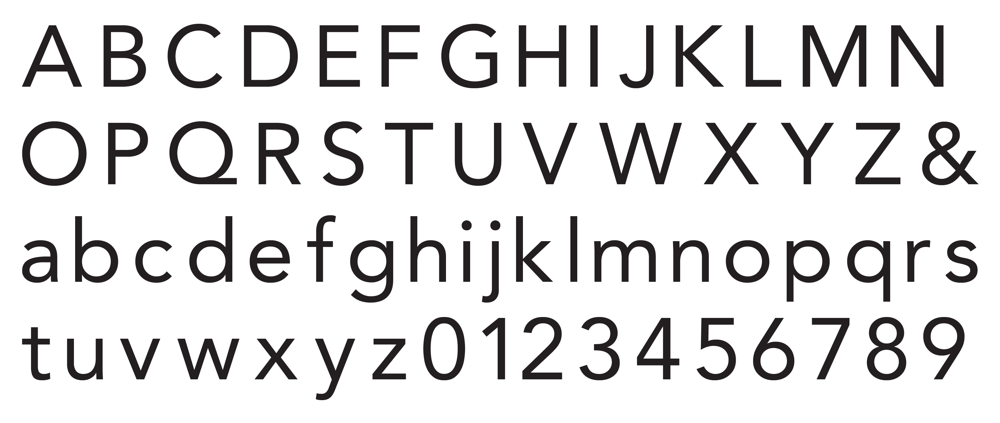

AVENIR

While Univers is Frutiger's most significant success, he considered Avenir his masterpiece. Avenir is a geometric sans-serif typeface with twelve styles (Osterer and Stamm pp. 336-337). The characters have a uniform and upright position. They have a moderate x-height, and the ascenders are higher than the cap-height. At a glance, the stroke weight seems to be even throughout the characters. The terminals are angled; because of this, the apertures of the e, a, and g feel more open. The diagonal cut also makes the curves flow more naturally. The angles are adjusted depending on the letter; for example, the terminal of the lowercase r is cut almost vertically, while the terminal for the lowercase s is more clearly angled. The apexes and vertexes end in flat horizontal cuts.
Upon examining the alphabet for the normal weight and stance for Avenir closer, we can see that the top and bottom of the letter o, both uppercase and lowercase, are slightly thinner than the sides, creating a vertical stress while also making the letter seems like it was drawn in a perfect circle. The tittles of the lowercase i and j are round dots. In the bowls of the lowercase a, b, d, g, p, and q, the stroke becomes thinner as it moves toward the stem. This also occurs near the joint of the lowercase m, n, r, and u. The crossbar in the capital A is low. The horizontal strokes in the capital E and H are at the same height and are slightly higher than the strokes in the capital F and G, which are also at an equal height to each other.

Avenir Roman (above) and Avenir Next Regular (below)
NEXT
Frutiger later consulted with a designer from Linotype to expand the Avenir family. This resulted in Avenir Next, consisting of thirty-two styles and introducing the condensed faces (Osterer and Stamm 343). Aside from adding heavier weights, the light and roman were removed. The regular form for Avenir is Avenir Roman, but for Avenir Next is Avenir Next Regular which has a thinner stroke. Although there is no Avenir Next Book, Avenir Next Regular has an equal stroke weight to Avenir Book (Osterer and Stamm 343). The redesign features a more generous tracking. Between Avenir and Avenir Next, the adjustments in the characters are barely noticeable. The more apparent differences are the height of the cross stroke in the capital G and the descenders of the lowercase p and q. The crotches in Avenir Next are cut sharper and deeper. The diagonals of the uppercase K join the stem directly, unlike in Avenir.

An overlay comparison between Avenir Roman (red) and Avenir Next Regular (blue).